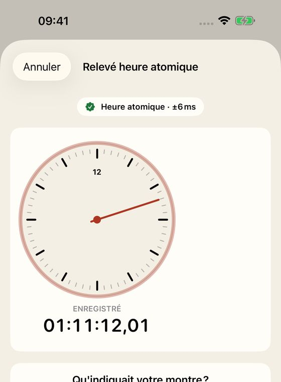
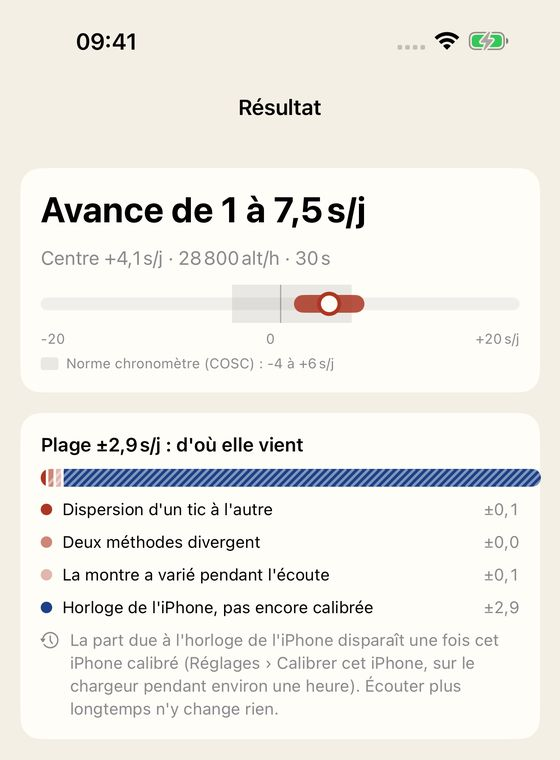
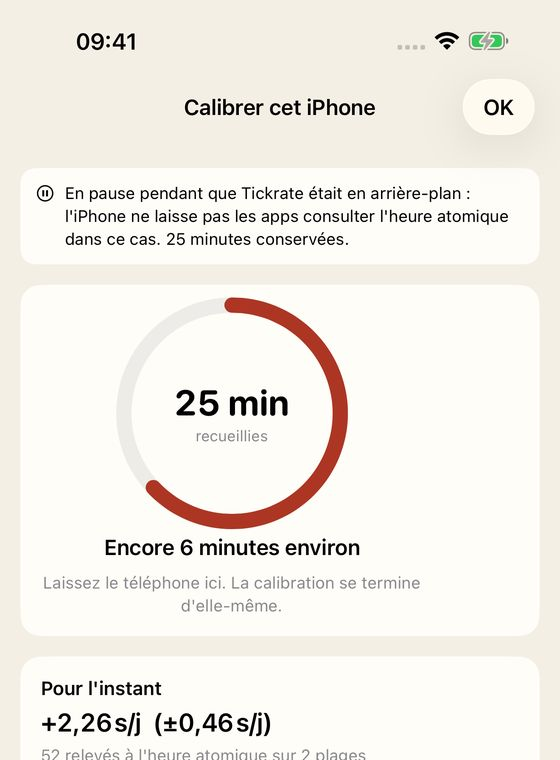

Tickrate
De combien de secondes par jour votre montre mécanique avance-t-elle ou retarde-t-elle ?
Tickrate est une app iPhone qui vous indique de combien de secondes par jour votre montre mécanique avance ou retarde.
Elle compare la montre avec l’heure atomique à quelques heures ou quelques jours d’intervalle pour obtenir sa marche diurne réelle. Elle peut aussi écouter le tic-tac avec le micro de l’iPhone pour une estimation rapide, toujours affichée sous forme de plage.
Une montre est gratuite, avec relevés et écoutes illimités ; son historique affiche les 30 derniers jours. Tickrate Unlimited, un achat unique (7,99 $ US aux États-Unis), ajoute toutes les montres, l’historique complet, l’export et l’import.
Fonctionnement
Relevés avec l’heure atomique : la marche réelle
Ouvrez une montre et touchez Relevé. Tickrate affiche l’heure atomique ; touchez l’écran au moment où votre trotteuse atteint le 12. Faites un nouveau relevé quelques heures ou quelques jours plus tard : Tickrate trace une droite passant par vos relevés. Sa pente est la marche diurne, avec une plage. Des relevés espacés d’un jour donnent environ ±0,4 seconde par jour ; espacés d’une semaine, beaucoup moins.

Écoute : une estimation rapide
Dans une pièce calme, posez le bord inférieur de votre iPhone contre le boîtier de la montre, à côté de la couronne, pendant 20 à 60 secondes. Tickrate mesure le tic-tac de deux façons indépendantes et affiche la marche sous forme de plage, en détaillant de quoi elle se compose. Si les deux méthodes ne concordent pas, il n’affiche aucun chiffre et explique pourquoi.

Calibrer cet iPhone, une seule fois
L’horloge audio de chaque iPhone avance ou retarde légèrement, ce qui décale chaque écoute. Laissez Tickrate ouvert sur le chargeur pendant environ une heure : il mesure l’horloge de votre iPhone par rapport à l’heure atomique et corrige toutes les écoutes suivantes.

Trois façons de connaître la marche de votre montre
| Tickrate (app iPhone) | Chronocomparateur | Comparaison manuelle avec une horloge de référence | |
|---|---|---|---|
| Ce qu’il vous faut | Un iPhone | Un appareil dédié avec un micro de contact | Une horloge précise, un carnet et de la patience |
| Coût | Gratuit pour une montre (relevés et écoutes illimités, 30 derniers jours d’historique) ; achat unique pour davantage | Le prix de l’appareil | Gratuit |
| Précision | Relevés espacés d’un jour : environ ±0,4 s/j. Écoute : une plage d’environ ±0,5 à ±1 s/j sur un signal propre après calibration de l’iPhone, environ ±3 s/j avant | Dépend de l’appareil | Aussi bonne que votre lecture de la trotteuse, répartie sur les jours entre deux lectures |
| Durée | Deux touchers à quelques heures ou jours d’intervalle ; ou 20 à 60 secondes d’écoute | Environ une minute par position | Plusieurs jours |
| Ce que vous apprenez | Marche diurne (moyenne au porter, ou instantanée à l’écoute) | Marche, amplitude et erreur de repère, par position | Marche diurne moyenne |
Les chiffres de précision de Tickrate viennent de nos propres tests (voir Sources). Nous n’en donnons pas pour les chronocomparateurs, car cela dépend de l’appareil.
Ce que Tickrate ne fait pas
- L’écoute demande une pièce calme et un iPhone en contact avec le boîtier. Certaines montres ont un tic-tac trop faible pour le micro d’un téléphone.
- Les montres à quartz et autres montres électroniques ne peuvent pas être mesurées à l’écoute. Les relevés avec l’heure atomique fonctionnent avec toute montre dotée d’une aiguille des secondes.
- Une écoute donne une estimation de la marche à ce moment-là, dans cette position. La marche diurne réelle s’obtient par des relevés avec l’heure atomique sur un jour ou plus.
- Tickrate mesure uniquement la marche, pas l’amplitude ni l’erreur de repère.
- Tant que vous n’avez pas calibré votre iPhone (environ une heure sur le chargeur), les plages d’écoute sont plus larges.
- iPhone uniquement, iOS 17 ou version ultérieure.
Questions
Peut-on savoir avec un iPhone si une montre mécanique avance ou retarde ?
Oui. Tickrate le fait de deux façons : comparer la montre avec l’heure atomique à quelques heures ou jours d’intervalle donne sa marche diurne réelle, à environ ±0,4 seconde par jour près avec des relevés espacés d’un jour. Écouter le tic-tac pendant 20 à 60 secondes donne une estimation rapide de la marche actuelle, affichée sous forme de plage.
Comment vérifier la précision de ma montre sans chronocomparateur ?
Comparez-la à une horloge précise à deux moments, puis divisez l’écart par le temps écoulé entre les deux. Tickrate le fait pour vous : il affiche l’heure atomique, vous touchez l’écran quand la trotteuse atteint le 12, et après le deuxième relevé il affiche la marche en secondes par jour. Votre temps de réaction est à peu près le même à chaque fois, il s’annule donc en grande partie.
Combien de secondes d’écart par jour est normal pour une montre mécanique ?
De quelques secondes à quelques dizaines de secondes par jour, c’est courant ; cela dépend du mouvement. Un chronomètre certifié doit avoir une marche moyenne comprise entre −4 et +6 secondes par jour au test du COSC. Les mouvements automatiques abordables très répandus ont des tolérances plus larges : le NH35 de Seiko, par exemple, est donné pour −20 à +40 secondes par jour. La position, l’état de remontage et la température font varier la marche de plusieurs secondes par jour ; une mesure isolée n’est donc qu’un instantané.
Quelle est la précision d’une mesure avec le micro de l’iPhone ?
Environ ±0,5 à ±1 seconde par jour : c’est la largeur de la plage après 30 secondes d’écoute d’une montre moderne au signal propre, une fois l’horloge de l’iPhone calibrée. L’horloge audio de chaque iPhone avance ou retarde légèrement (d’environ 2 secondes par jour sur l’iPhone que nous avons mesuré) ; avant la calibration, Tickrate élargit donc chaque plage à environ ±3 secondes par jour au lieu de cacher cette erreur. Ces chiffres viennent de nos tests sur des enregistrements de vraies montres et sur un tic-tac synthétique, pas de mesures sur un grand nombre d’iPhone.
Pourquoi Tickrate affiche-t-il une plage et pas un chiffre unique ?
Parce qu’un chiffre unique d’apparence exacte prétendrait en savoir plus que ce qu’une courte écoute permet de savoir. La plage est construite à partir de ce qui peut faire varier le résultat : la dispersion entre les tics, l’écart entre deux méthodes de mesure indépendantes, les variations de la montre pendant l’écoute et l’horloge de l’iPhone lui-même. L’app indique la part de chaque élément, et quand les deux méthodes ne concordent pas, elle n’affiche aucun chiffre.
Que faire si Tickrate n’entend pas ma montre ?
Tickrate vous le signale, n’affiche aucun chiffre et vous explique pourquoi. Essayez dans une pièce calme, la montre cadran vers le haut sur une surface souple, avec le bord inférieur de l’iPhone, là où se trouve le micro, contre le boîtier à côté de la couronne. S’il ne l’entend toujours pas, utilisez les relevés avec l’heure atomique : ils fonctionnent avec toute montre dotée d’une aiguille des secondes, dans n’importe quelle pièce.
Tickrate a-t-il besoin d’une connexion Internet ?
Seulement pour l’heure atomique. Les relevés et la calibration de l’iPhone lisent l’heure sur des serveurs de temps publics : d’abord ceux d’Apple, puis ceux de Cloudflare ou de Google si Apple ne répond pas. L’écoute fonctionne hors ligne, et sans connexion un relevé utilise l’horloge de l’iPhone et le signale.
Tickrate enregistre-t-il ou envoie-t-il le son ?
Non. Le micro n’est utilisé que pendant l’écoute d’une montre ou la calibration de l’iPhone ; le son est analysé sur l’iPhone et n’est jamais enregistré, conservé ni envoyé. Il n’y a pas de compte : vos montres et vos résultats restent sur votre iPhone, et vous pouvez les exporter en CSV ou dans un fichier de sauvegarde.
Tickrate ou chronocomparateur : quelle différence ?
Un chronocomparateur mesure davantage : la marche, l’amplitude et l’erreur de repère dans chaque position, avec un micro de contact ; Tickrate ne mesure que la marche. Ce qu’apporte Tickrate, c’est la durée : des relevés avec l’heure atomique sur plusieurs jours donnent la marche moyenne telle que vous portez réellement la montre. Si vous réglez des mouvements ou avez besoin de l’amplitude et de l’erreur de repère, utilisez un chronocomparateur.
Avec quelles montres Tickrate fonctionne-t-il ?
Les relevés avec l’heure atomique fonctionnent avec toute montre dotée d’une aiguille des secondes, mécanique ou à quartz. L’écoute fonctionne avec les montres mécaniques aux fréquences courantes de 12 000 à 43 200 alternances par heure, comme 21 600 et 28 800 ; Tickrate peut détecter la fréquence tout seul. Les montres à quartz ne peuvent pas être mesurées à l’écoute.
Combien coûte Tickrate ?
Une montre est gratuite, avec relevés, écoutes et calibrations de l’iPhone illimités ; son historique et son graphique affichent les 30 derniers jours, et les entrées plus anciennes sont conservées. Tickrate Unlimited est un achat unique (7,99 $ US aux États-Unis ; les prix varient selon les pays), sans abonnement ni compte. Il ajoute toutes les montres, l’historique complet, l’export et l’import, ainsi que la calibration avec une montre à quartz, et il est compatible avec le Partage familial.
Sources
- Test chronomètre du COSC : marche diurne moyenne de −4 à +6 secondes. cosc.swiss
- Spécification de précision du Seiko NH35 : −20 à +40 secondes par jour (spécification du fabricant reprise par Caliber Corner). calibercorner.com
- Chiffres de Tickrate (±0,4 s/j pour des relevés espacés d’un jour, ±0,5 à ±1 s/j pour une écoute propre après calibration, ±3 s/j avant, environ 2 s/j pour l’horloge audio d’un iPhone) : nos propres tests sur des enregistrements de montres, des signaux synthétiques et un iPhone 17 Pro Max, novembre 2026.